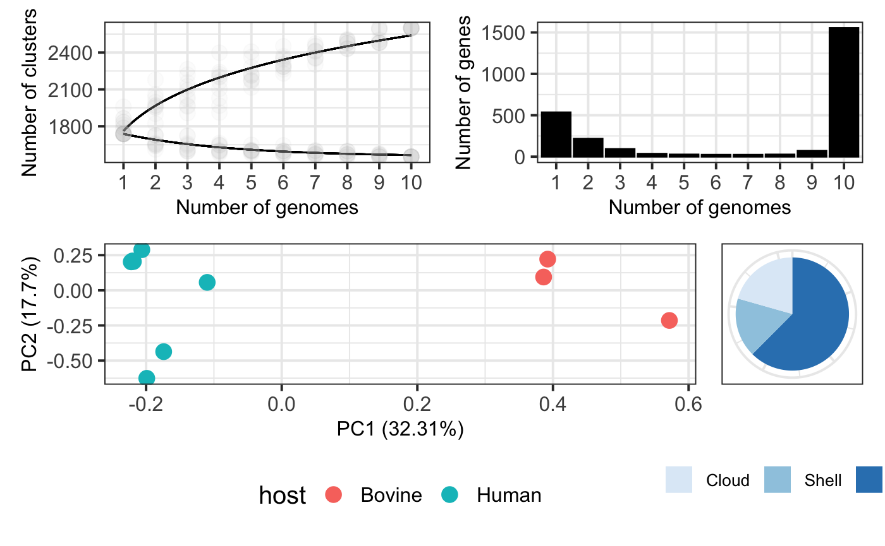

6-Recipes.RmdHere we introduce our cookbook which is made of recipes. Each recipe is a customized piece of code to complete different advanced tasks. By using these recipes (or creating new ones) the user can take full profit of functionalities provided by pagoo and easily interact with other R packages to perform a variety of analyses including phylogenetics, pangenome-wide association studies, sequence comparisons, ecological measures, prepare publication-quality figures, among others. If you want to standarize any analysis from your pangenome data that is not covered in this tutorial, we can help you and write a recipe. Contact us!
Start by loading the pagoo object, as in previous tutorials:
library(pagoo) # Load package
toy_rds <- system.file('extdata', 'toy_data.RDS', package = 'pagoo')
p <- load_pangenomeRDS(toy_rds)In the section 5 - Methods and Plots we introduced a set of several plots that pagoo can generate for the basic exploration of pangenome features. These plots are generated using ggplot2, so their aesthetic features can be easily improved. Here we show how pagoo interacts with ggplot2 and some of its extensions to produce publication-quality figures from the previous standard pangenome plots, allowing flexible styling and reproducible generation of figures. Some customization has already been shown in previous tutorials.
library(ggplot2)
library(scales)
library(patchwork)
# 1. Pangenome curves
curves <- p$gg_curves() + # Plot core- and pan-genome curves
scale_color_manual(values = c('black', 'black')) + # Customize line colors
geom_point(alpha = .05, size = 4, color = 'grey') + # Add semi-transparent data points
theme_bw(base_size = 15) + # Customize background theme
theme(legend.position = 'none', # Remove legend
axis.title = element_text(size = 12), # Customize axis title
axis.text = element_text(size = 12)) # Customize axis text size
# 2. Gene frequency bar plots
bars <- p$gg_barplot() + # Plot gene frequency distribution
theme_bw(base_size = 15) + # Customize background color
theme(axis.title = element_text(size = 12), # Customize axis label size
axis.text=element_text(size = 12)) + # Customize axis text size
geom_bar(stat = 'identity', color = 'black', fill = 'black') # Customize bar color and borders
# 3. PCA of accessory genes colored by country
pca <- p$gg_pca(colour = 'country', size = 4) + # Plot PCA, color by country
theme_bw(base_size = 15) + # Customize background theme
theme(legend.position = 'bottom') + # Customize legend position
theme(axis.title = element_text(size = 12), # Customize axis title
axis.text = element_text(size = 12)) # Customize axis text size
# 4. Pie chart of core and accessory genes
pie <- p$gg_pie() + # Plot pie chart
theme_bw(base_size = 15) + # Customize background theme
scale_fill_discrete(guide = guide_legend(keywidth = .75,
keyheight = .75)) + # Customize fill
scale_fill_brewer(palette = "Blues") + # Customize fill color
scale_x_discrete(breaks = c(0, 25, 50, 75)) + # Customize axis scales
theme(legend.position = 'bottom', # Customize legend position
legend.title = element_blank(), # Remove legend title
legend.text = element_text(size = 10), # Change legend text size
legend.margin = margin(0, 0, 13, 0), # Change legend margins
legend.box.margin = margin(0, 0, 5, 0), # Change box margins
axis.title.x = element_blank(), # Remove X-axis title
axis.title.y = element_blank(), # Remove Y-axis title
axis.ticks = element_blank(), # Remove axis ticks
axis.text.x = element_blank()) # Remove X-axis text
# 5. Use patchwork to arrange plots using math operators
(curves + bars) / (pca + pie)
After you have reconstructed the pangenome, it’s a common practice to use a single representative gene from each cluster to annotate them using a curated database such as COG, EggNOG or KEGG. After doing that, you probably want to add any new information to the pagoo object as cluster’s metadata. In this recipe we show how to extract one representative sequence from each cluster, translate each of them, and use rBLAST package to query a hypothetical blastp database. NOTE: we didn’t include any blast database in the package, the code here is just to illustrate the general idea. Running the following chunk will throw an error.
DEVELOPER NOTE: ADDING METADATA STEP MISSING
# Load required packages
if (!require(rBlast)) devtools::install_github('mhahsler/rBLAST')
library(Biostrings)
library(rBLAST)
library(magrittr)
db_path <- 'path/to/custom/blastpdb' # Path to custom blastp db
db <- blast(db = db_path, type = 'blastp') # Set blastdb
blast_result <- p$sequences %>% # Pangenome sequences
lapply('[[', 1L) %>% # Subset 1 sequence from each cluster
Biostrings::DNAStringSet() %>% # Transform list to DNAStringSet
Biostrings::translate() %>% # Translate DNAStringSet
rBLAST::predict.BLAST(db, .) # Run blastp. Returns data.frame
### ADD METADATA STEP MISSINGThe core genome is composed by those genes that are present in every or almost every genome in the sample. As these genes are present in all genomes, they can be used to extract important biological information like phylogenetic relationships, study recombination or selective pressures. For doing these, core genes need to be aligned. In the next few sections we explain how to do this to perform some of the above mentioned downstream analyses.
To reveal the vertical evolutionary history of a bacterial population we should take into account the presence of horizontal acquisition of genetic material, like by means of recombination, that is mantained by the action of natural selection. Hence, we can use the Tajima’s D test of neutrality as implemented in pegas ( Paradis, 2010) to identify those core genes that are not subjected to strong selective pressures and are likely evolving neutrally.
# Load required packages
library(magrittr)
library(DECIPHER)
library(pegas)
library(ape)
tajimaD <- p$core_seqs_4_phylo() %>% # Core genome sequences
lapply(DECIPHER::AlignTranslation) %>% # Align translation
lapply(ape::as.DNAbin) %>% # Transform class to DNAbin
lapply(pegas::tajima.test) %>% # Compute Tajima's test
sapply('[[', 'D') # Get Tajima's 'D' statistic from each
# Which are neutral?
which(tajimaD <= 0.2 & tajimaD >= -0.2) The best practices on how to build a phylogeny from core genomes is a topic of debate. In this first example we provide a one-liner to align individual core genes (like in the previous case), produce a concatenated core genome alignment, calculate a core genome phylogeny using the Neighbor-Joining method as implemented by phangorn (Schliep, 2011), and visualize it using host metadata to colour tree tips using ggtree (Yu et al., 2017).
# Load required packages
library(magrittr)
library(DECIPHER)
library(Biostrings)
library(phangorn)
library(ggtree)
phy <- p$core_seqs_4_phylo() %>% # Core genome sequences
lapply(DECIPHER::AlignSeqs) %>% # Align
do.call(Biostrings::xscat, .) %>% # Concatenate alignments
setNames(p$organisms$org) %>% # Set sequence names
as('matrix') %>% # Transform to matrix
phangorn::phyDat(type = 'DNA') %>% # Transform to phangorn's phyDat
phangorn::dist.ml() %>% # Compute distance
phangorn::NJ() %>% # Compute NJ
ggtree::ggtree() %<+% # Create ggtree
as.data.frame(p$organisms) + # Get organisms metadata
ggtree::geom_tippoint(aes(colour = country)) # Add coloured tip pointsIdentifying population structure from genomic information is a common problem in microbial ecology. This aims to identify discrete sub-populations within a more heterogeneous population, which is helpful to detect associations with particular phenotypes, geographic origin, host-association, etc. There are various methods for doing this, but probably the most used in microbial genomics is hierBAPS (Cheng et al., 2013) which has been re-implemented in R as rhierBAPS (Tonkin-Hill et al., 2018). In the following recipe we will combine previous examples to 1) align core clusters; 2) compute Tajima’s D statistic over aligned core clusters to identify the ones that are likely to be evolving neutrally; 3) concatenate selected neutral clusters; 4) Run the herBAPS algorithm; 5) extract lineage information and add it to the pagoo object as organism’s metadata; and 6) compute and plot a tree with lineage information as colour tips.
library(magrittr)
library(DECIPHER)
library(rhierbaps)
library(ape)
library(phangorn)
# 1. Align translation of core genes
ali <- p$core_seqs_4_phylo() %>% # Core genome sequences
lapply(DECIPHER::AlignTranslation) # Align translation
# 2. Identify neutral core clusters
tajD <- ali %>%
lapply(ape::as.DNAbin) %>% # Transform class to DNAbin
lapply(pegas::tajima.test) %>% # Compute Tajima's test
sapply('[[', 'D') # Subset D statistic
neutral <- which(tajD <= 0.2 & tajD >= -0.2)
# 3. Concatenate neutral core clusters
concat_neu <- ali[neutral] %>% # Select neutral clusters
do.call(Biostrings::xscat, .) %>% # Concatenate alignments
setNames(p$organisms$org) %>% # Set sequence names
as('matrix') %>% # Transform to matrix
tolower() # Translate to lower case
# 4. Compute structure
rhb <- hierBAPS(snp.matrix = concat_neu, # Input matrix alignment
n.pops = 10, # Max number of subpopulations
max.depth = 1, # Max depth for hierarchical clustering
n.extra.rounds = 5) # Extra rounds to ensure convergence
# 5. Add lineage as metadata to organisms in pagoo object
res <- rhb$partition.df
lin <- data.frame(org = as.character(res[, 1]),
lineage = as.factor(res[, 2]))
p$add_metadata(map = 'org', data = lin)
# 6. Compute tree and plot it with lineage information
concat_neu %>%
phangorn::phyDat(type = 'DNA') %>% # Transform to phangorn's phyDat
phangorn::dist.ml() %>% # Compute distance
phangorn::NJ() %>% # Compute NJ
ggtree::ggtree() %<+% # Create ggtree
as.data.frame(p$organisms) + # Get organisms metadata
ggtree::geom_tippoint(aes(colour = lineage)) # Colour tips with lineage info